To streamline the information to the user and allow her to act on that information, we thought about adding a button to share. However, after testing with internal stakeholders, we discovered that the user needs to see the alert's full details before deciding to share.
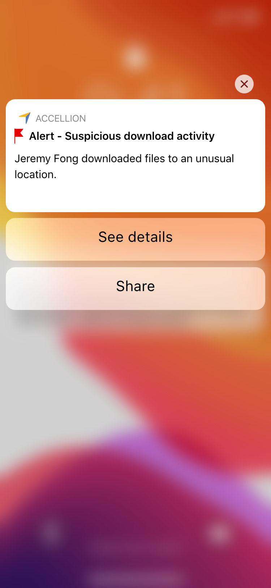Idea of expand push notification for options, to see details or share alert.
When capturing the details that the alert needed to contain, including the metadata, it was clear that some repetition could be avoided. We also got feedback about a better display of the location to understand where the alert was triggered.
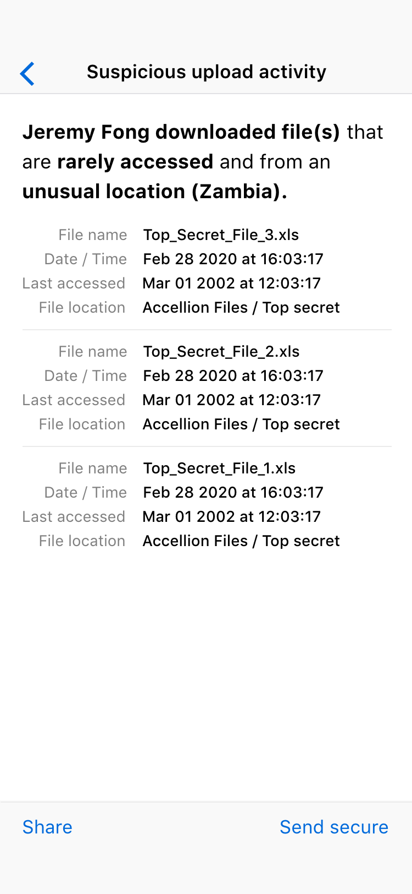Idea of full alert details including the files that triggered the alert.
This design shows a dedicated text search field to narrow down search results to create the tools for the user to find alerts quickly. It turns out that after some testing with internal stakeholders, we realized that the number of warnings was going to be small and the frequency sparse, so a single search filter was enough.
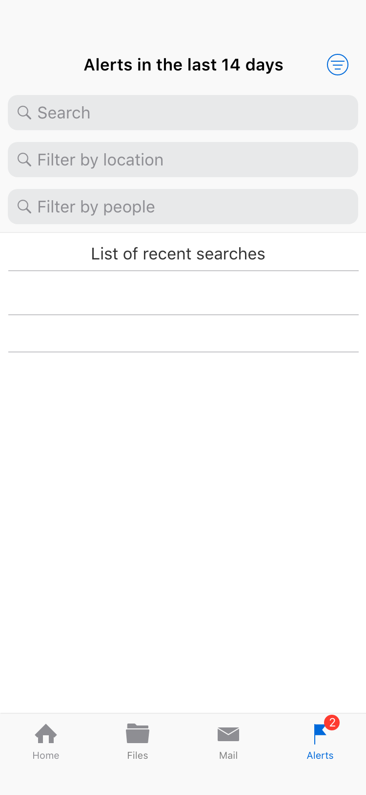Idea of search and filter alerts.
The idea of filtering as an end goal was correct, so we explored ways to simplify the ability to see the query and the filters without the clutter of the three text boxes. We did not investigate further, given that more alerts would take time to develop and nothing complicated would be needed at that moment.
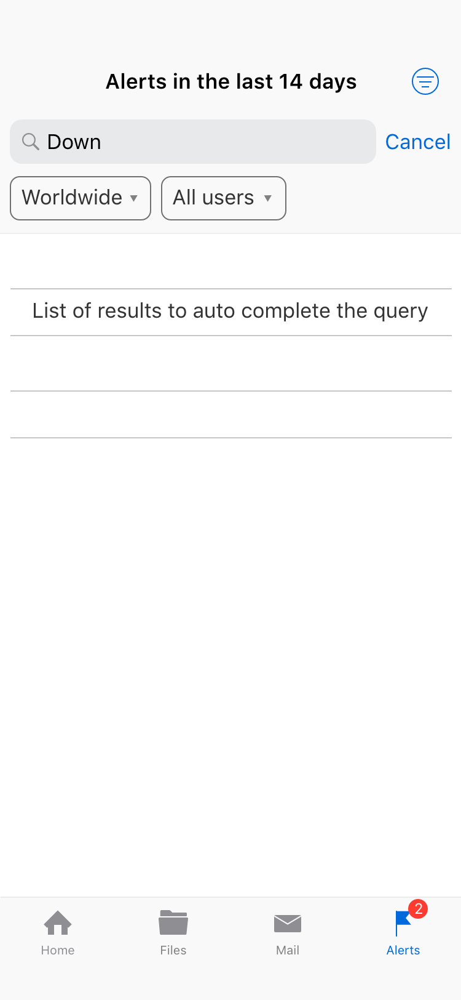Iteration on the search alerts interaction.
When thinking about the options for each alert in the context of risk management, we explored the type of actions that the CISO would want to take on the user who triggered the alerts; however, given that the level of confidence can't be determined on the alerts, we decided not to expand on these ideas for the moment.
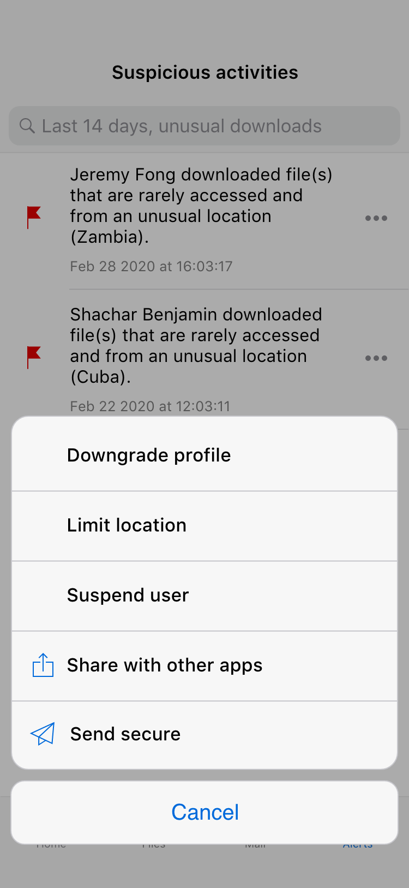Iteration on the alert actions' menu.
This iteration was designed to test the option of not investing in any search, filter, or sort capabilities; however, given that the engineering effort was small and the number of alerts was expected to be low, this iteration was discarded.
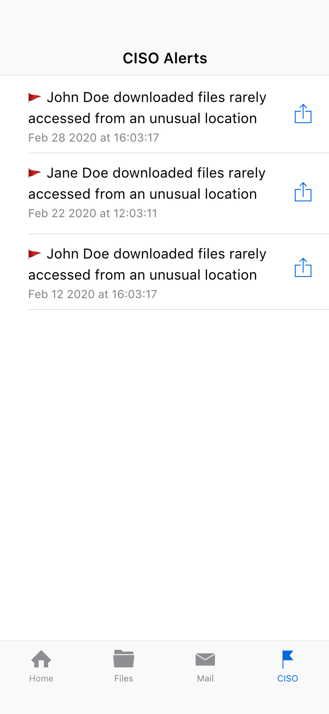Iteration of a version without any search, filter or sort capabilities.
To explore ideas around the central metaphor of alerts, one idea early on was to enable a snooze option assuming the system would somehow insist on it if the behavior continued. Together with the AI team, we determined that creating too much noise may reduce the confidence of the CISO, therefore increasing the possibility of turning off the alerts altogether.
The tab's name was initially "Alerts". However, we discovered that some people assumed that all alert notifications would be located there. Given that the new view was only available for the CISO, the final name for this version was "CISO".
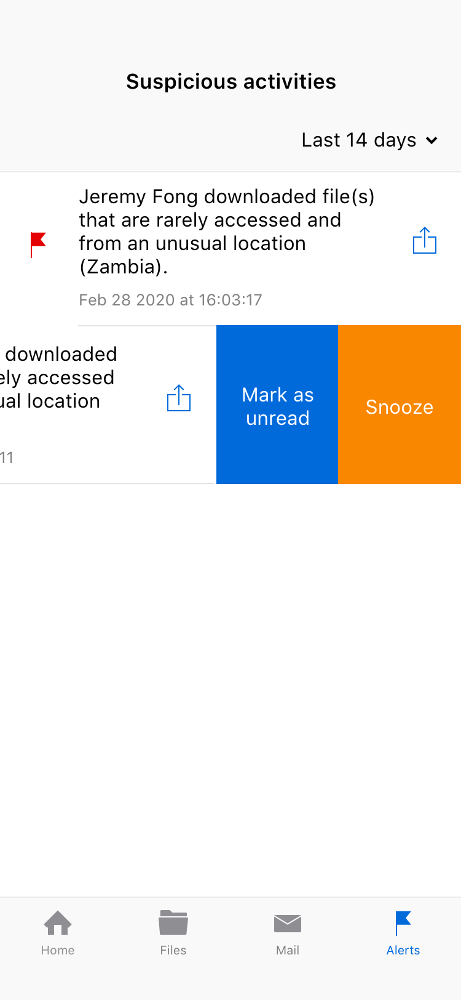Iteration of swipe to see option to snooze alert.
Apart from the push notification, we also used the count on the badge to show the number of unread alerts to let the user know that there is something unread ready for her to see.
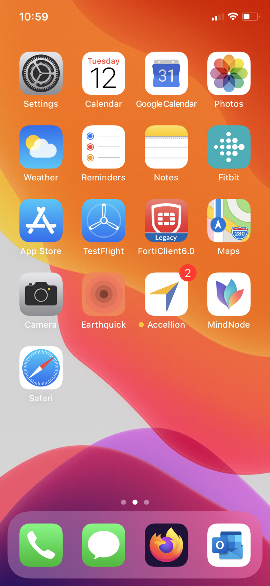Final design of badge count on app icon refering to unread alerts.
The final design is a list of alerts ordered by more recent on the top; each attention has some details and a signal to indicate if unread. The shortcut to mark as unread is to give quick access in the case of a false alarm; in the contrary case, and the alert is accurate, the shortcut to share the info is helpful.

Final design of list of alerts and swipe actions.
Given that the data was very consistent for this version, the search box could filter by name or location by directly typing; the only filter needed was to show or hide archived alerts. The results had the exact indication of unread if applied and the actions' menu to access any function available. This pattern on the search results is the same used on other views of the mobile UI.
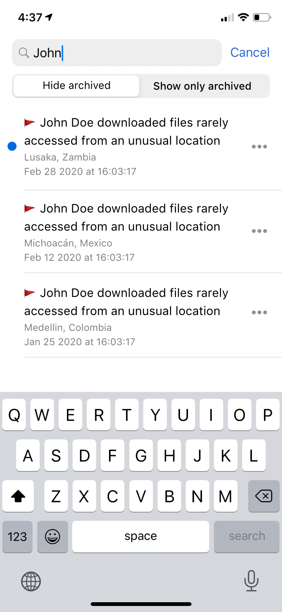Final design for search alerts.
The alert menu included the options to mark or unmark as unread to manage items similarly to email messages on the Mail tab, archive alerts for false positives, share the details using 3rd party apps, or the built-in Mail function. This same menu is available from the Alert details page.
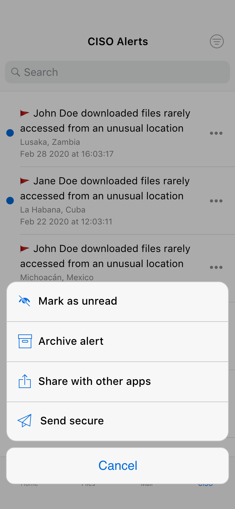Final design of alert actions' menu.
The alert's details page showed all there is to know about the alert and offered all the available actions mentioned before. The idea is to present enough clear information for the CISO to determine if the alert represents a valid risk, and, if that's the case, please get in touch and share the details about the alert.
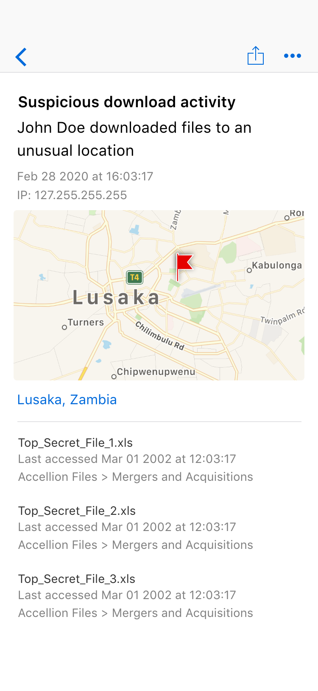Final design of the alert full details page.